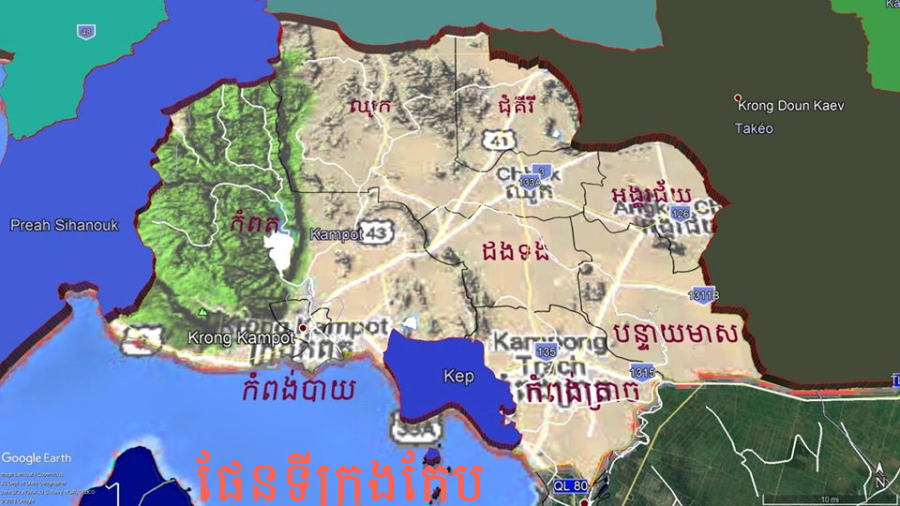
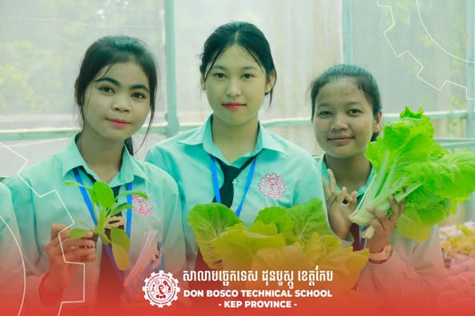
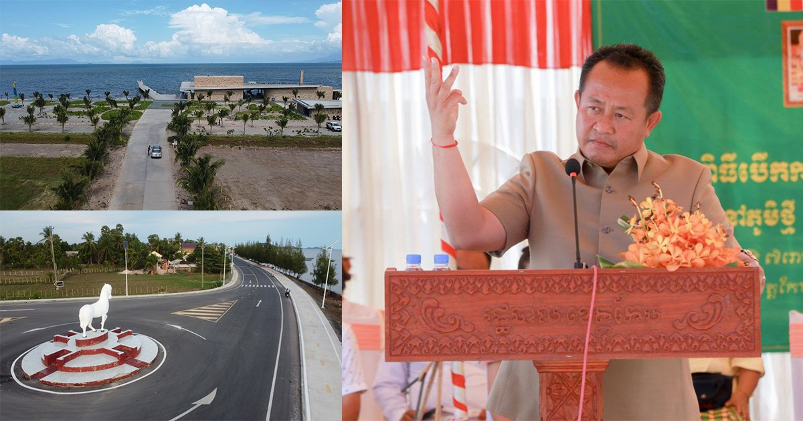
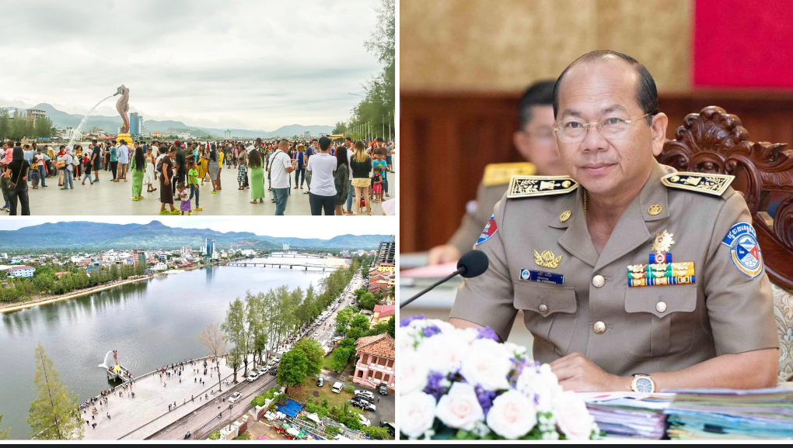

សូមស្វាគមន៍មកកកាន់
ខេត្តកែប
ខាងក្រោមនេះអ្នកនឹងអាចយល់ដឹងអំពីព័ត៌មានក្នុងខេត្តកែប
មាតិការ
១.ប្រវតិ្តខេត្តកែប............................................................................................។
២.ទីតាំងភូមិសាស្ត្រ.........................................................................................។
៣.ប្រជាជន និងវប្បធម៌..................................................................................។
៤.ស្ថាបត្យកម្ម និងសំណង់សំខាន់ៗ................................................................។
៥.ការអប់រំ និងស្ថាប័នសិក្សា...........................................................................។
៦.សេដ្ឋកិច្ច........................................................................................................។
៧.ទេសចរណ៍...................................................................................................។
៨.ការអភិវឌ្ឍនាអនាគត..................................................................................។
ប្រវតិ្តខេត្តកែប
មាតិកាខេត្ត កែប គឺជាខេត្តតូចបំផុតក្នុងប្រទេសកម្ពុជា ប៉ុន្តែមានប្រវត្តិសំខាន់ និងគួរឱ្យចាប់អារម្មណ៍។ កែបត្រូវបានបង្កើតជាខេត្តនៅឆ្នាំ ១៩០៨ ក្នុងសម័យអាណានិគមបារាំង ហើយក្លាយជាទីក្រុងសម្រាកពេញនិយមសម្រាប់អ្នកបារាំង និងអ្នកមានក្នុងសង្គមខ្មែរ។ ក្នុងទសវត្សរ៍ឆ្នាំ ១៩៦០ កែបត្រូវបានគេស្គាល់ថា ជា “ក្រុងឆ្នេររបស់កម្ពុជា” មានវីឡាស្រស់ស្អាត និងសណ្ឋាគារលំដាប់ខ្ពស់ជាច្រើន។ ប៉ុន្តែពេលក្រោយក្នុងសម័យសង្គ្រាម ក្រុងកែបបានទទួលការខូចខាតយ៉ាងខ្លាំង ហើយអគារជាច្រើនត្រូវបានបោះបង់ចោល។ សព្វថ្ងៃនេះ កែបកំពុងស្តារឡើងវិញ និងក្លាយជាទីក្រុងទេសចរណ៍ស្ងប់ស្ងាត់ ដែលល្បីលើ ឆ្នេរកែប និង កណ្ដាលកែប (កោះទ្រង់ចេក)។
ទីតាំងភូមិសាស្ត្រ
មាតិកាខេត្ត កែប ស្ថិតនៅភាគនិរតីនៃប្រទេសកម្ពុជា មានឆ្នេរតូចតែស្រស់ស្អាត ជាប់សមុទ្រថៃ។ ខេត្តនេះមានព្រំប្រទល់ភាគកើត និងភាគជើងជាប់ខេត្ត កំពត, ខាងលិចជាប់ព្រំដែនប្រទេស វៀតណាម, ខាងត្បូងទំនាក់ជាប់សមុទ្រ។ ទីតាំងភូមិសាស្ត្រនេះធ្វើឲ្យកែបមានសក្តានុពលក្នុងការអភិវឌ្ឍទេសចរណ៍ឆ្នេរ និងសេដ្ឋកិច្ចព្រំដែន។ កណ្ដាលខេត្តកែបគឺឆ្នេរដែលមានភាពស្ងប់ស្ងាត់ និងកោះតូចៗ ដូចជា កោះទ្រង់ចេក ដែលជាទីកន្លែងទាក់ទាញភ្ញៀវទេសចរយ៉ាងខ្លាំង។ ទីតាំងជិតភ្នំពេញ និងកំពតក៏ជាប្រយោជន៍សម្រាប់ការធ្វើដំណើររបស់ភ្ញៀវទេសចរ។
ប្រជាជន និងវប្បធម៌
មាតិកាខេត្ត កែប មានប្រជាជនប្រមាណ ៧០,០០០–១០០,០០០នាក់ ភាគច្រើនជាជនជាតិខ្មែរ និងជាពុទ្ធសាសនិក។ ក៏មានសហគមន៍ជនជាតិភាគតិច ដូចជា ចិន វៀតណាម និងជនជាតិដើមខេត្តផ្សេងៗ រស់នៅក្នុងតំបន់ឆ្នេរស្ងប់ស្ងាត់ និងកោះតូចៗ។ វប្បធម៌កែបផ្អែកលើប្រពៃណីជីវិតជនបទ ដូចជា ការធ្វើស្រែ ការនេសាទ និងសិល្បៈប្រពៃណីខ្មែរ។ ពិធីបុណ្យប្រពៃណីដូចជា បុណ្យចូលឆ្នាំខ្មែរ និង បុណ្យភ្ជុំបិណ្ឌ តែងតែអញ្ជើញប្រជាពលរដ្ឋ និងភ្ញៀវទេសចរចូលរួមយ៉ាងសប្បាយរីករាយ។ ក្រៅពីនេះ កែបក៏ល្បីលើអាហារប្រពៃណី និងស្នាដៃដើមដូចជា ម្ទេស ផ្លែឈើ និងត្រីស្រស់ពីទន្លេ និងសមុទ្រ។
ស្ថាបត្យកម្ម និងសំណង់សំខាន់ៗ
មាតិកាខេត្ត កែប មានស្ថាបត្យកម្មដែលផ្តោតលើការរួមបញ្ចូលប្រពៃណីខ្មែរ និងអ៊ឺរ៉ុបបន្ថែម។ នៅទីក្រុងកែប អ្នកអាចឃើញ វីឡាបារាំងសម័យអាណានិគម, ផ្ទះល្វែងបុរាណ និងសំណង់រដ្ឋបាលដែលនៅសល់ពីសតវត្សទី១៩–ទី២០។ ទេសចរណ៍ក៏អាចទស្សនាប្រាសាទ និងវិហារមួយចំនួន ដូចជា ព្រះវិហារបឹងលើក និង ព្រះវិហារច្រាំងទ្រូង ដែលប្រជាជនបូជាគោរពយ៉ាងសក្ការៈ។ លើសពីនេះ ឆ្នេរកែប និងកោះទ្រង់ចេក មានសំណង់សំខាន់ៗសម្រាប់ទេសចរណ៍ និងសណ្ឋាគារបែបឯកជន។ ស្ថាបត្យកម្ម និងសំណង់ទាំងនេះបង្ហាញពីការលាយបញ្ចូលអត្តសញ្ញាណវប្បធម៌ខ្មែរជាមួយឥទ្ធិពលបរទេស។
ការអប់រំ និងស្ថាប័នសិក្សា
មាតិកាខេត្ត កែប មានប្រព័ន្ធអប់រំចាប់ពីកម្រិតបឋមសិក្សា រហូតដល់វិទ្យាល័យ និងមជ្ឈមណ្ឌលបណ្តុះបណ្តាលវិជ្ជាជីវៈ។ សាលារៀនបឋម និងមធ្យមសិក្សាជាច្រើនបម្រើការអប់រំសម្រាប់កុមារ និងយុវជនក្នុងតំបន់ទាំងឆ្នេរ និងភូមិស្រុក។ ក៏មានសាខាសាកលវិទ្យាល័យ និងវិទ្យាស្ថានឯកជន ដែលផ្តល់ការបណ្តុះបណ្តាលទាន់សម័យ និងជំនាញវិជ្ជាជីវៈ ដើម្បីឆ្លើយតបទៅតាមតម្រូវការការងារ និងអភិវឌ្ឍសេដ្ឋកិច្ចក្នុងខេត្ត។ ការអប់រំកែបផ្តោតលើការលើកកម្ពស់សមត្ថភាពយុវជន និងការទទួលបានចំណេះដឹងទូទៅ ព្រមទាំងការគាំទ្រពីអង្គការមូលនិធិ និងអង្គការមិនមែនរដ្ឋាភិបាល (NGOs)។
សេដ្ឋកិច្ច
មាតិកាសេដ្ឋកិច្ចខេត្ត កែប មានមូលដ្ឋានលើ កសិកម្ម, នេសាទ, និង ទេសចរណ៍ ជាចម្បង។ កសិកម្មផ្តោតលើការដាំ ស្រូវ, ម្ទេស, និង ផ្លែឈើ ដែលផ្គត់ផ្គង់ទីផ្សារក្នុងស្រុក និងនាំចេញក្រៅប្រទេស។ ទេសចរណ៍កែបមានសក្តានុពលខ្ពស់ ដោយមានឆ្នេរសមុទ្រស្ងប់ស្ងាត់ និងកោះតូចៗ ដូចជា កោះទ្រង់ចេក ដែលទាក់ទាញភ្ញៀវទេសចរជាច្រើន។ វិស័យនេសាទ និងផលិតផលត្រីសមុទ្រក៏ជួយផ្គត់ផ្គង់ចំណូលសម្រាប់ប្រជាជនក្នុងតំបន់ឆ្នេរ។ ការវិនិយោគពីឯកជន និងបរទេសក៏កំពុងជំរុញឲ្យសេដ្ឋកិច្ចកែបមានភាពរីកចម្រើនយ៉ាងចម្រុះ និងស្ថាពរ។
ទេសចរណ៍
មាតិកាខេត្ត កែប គឺជាទីកន្លែងទេសចរណ៍ដែលល្បីលើឆ្នេរស្ងប់ស្ងាត់ និងកោះតូចៗ។ ឆ្នេរកែប មានភាពស្រស់ស្អាត និងស្ងប់ស្ងាត់ ព្រមទាំងអាចធ្វើសកម្មភាពទេសចរណ៍ដូចជា វាយស្រែក ទិញសាឡាត់ និងទូកកំសាន្ត។ កោះទ្រង់ចេក ជាកោះល្បីមួយ សម្រាប់ការពិសេសទេសចរណ៍ទឹកស្រស់ និងសណ្ឋាគារបែបឯកជន។ កែបក៏មានភ្នំ និងទន្លេសម្រាប់ការលំហែ និងទេសចរណ៍ធម្មជាតិ។ ពិធីបុណ្យប្រពៃណី និងអាហារប្រពៃណីក៏ជាគន្លងទាក់ទាញភ្ញៀវទេសចរដើម្បីស្វែងយល់ពីវប្បធម៌ និងជីវភាពប្រជាជនក្នុងតំបន់។
ការអភិវឌ្ឍនាអនាគត
មាតិកាខេត្ត កំពត ត្រូវបានកំណត់ជាតំបន់អភិវឌ្ឍសំខាន់មួយរបស់កម្ពុជា ដោយផ្តោតលើ ទេសចរណ៍អេកូ, កសិកម្មស្តង់ដារអន្តរជាតិ, និង វិនិយោគឧស្សាហកម្មស្រាល។ រដ្ឋាភិបាលមានគម្រោងអភិវឌ្ឍហេដ្ឋារចនាសម្ព័ន្ធ ដូចជា ផ្លូវជាតិ ទំនប់ និងប្រព័ន្ធភ្លើងទំនើប ដើម្បីគាំទ្រការធ្វើដំណើរ និងដឹកជញ្ជូនទំនិញ។ ការអភិវឌ្ឍឆ្នេរ កំពង់ផែ និងតំបន់កែប-កំពត ត្រូវបានគេសង្កេតថា អាចក្លាយជាមជ្ឈមណ្ឌលទេសចរណ៍ឆ្នេរសកល។ ក្រៅពីនេះ កំពតក៏កំពុងទទួលការចាប់អារម្មណ៍ពីវិនិយោគិនបរទេសក្នុងវិស័យអចលនទ្រព្យ និងសណ្ឋាគារ។ ទិសដៅអនាគតនៃកំពត គឺក្លាយជាតំបន់អភិវឌ្ឍសេដ្ឋកិច្ច-ទេសចរណ៍បៃតង ដែលបន្សល់ទុកអត្តសញ្ញាណវប្បធម៌ និងធម្មជាតិដ៏ស្រស់ស្អាត។
